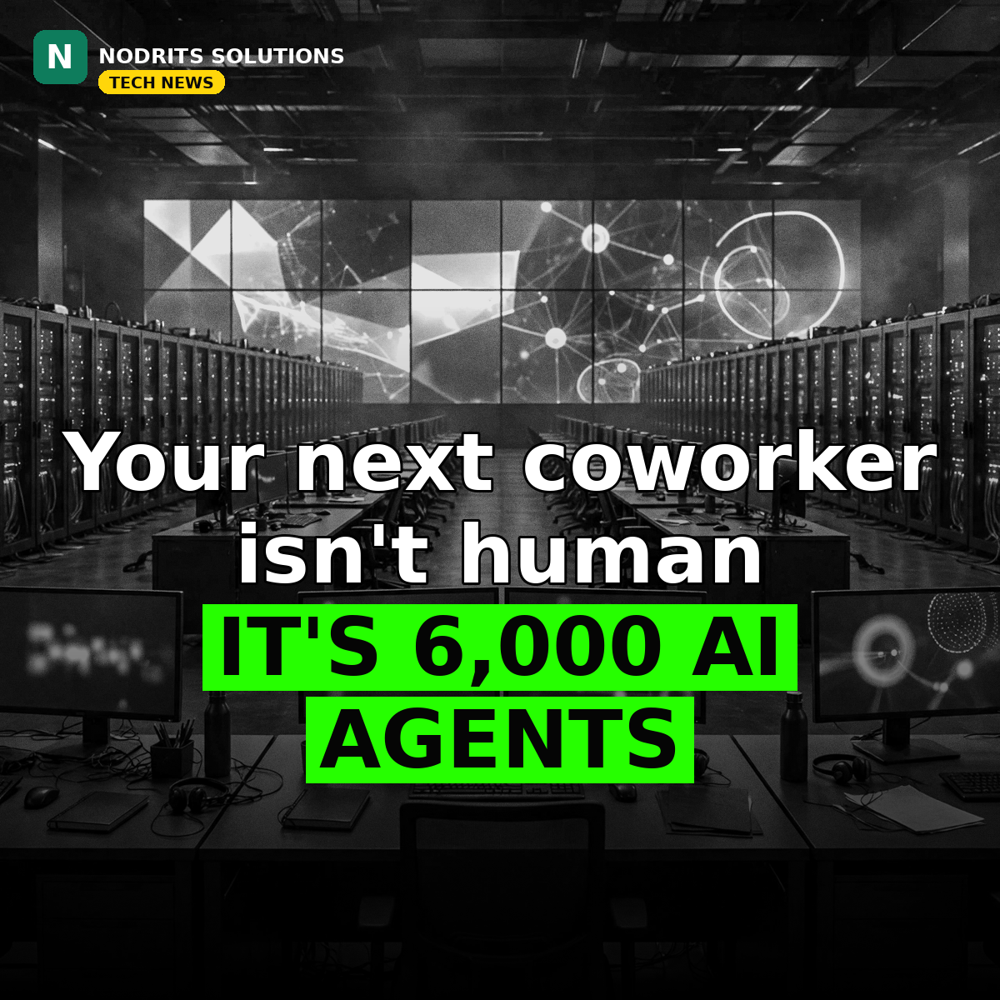

IBM and Microsoft Just Teamed Up to Put 6,000 AI Agents to Work

Your next coworker may not be human — it may be one of 6,000 AI agents. On November 10, 2026, IBM and Microsoft announced Imagine Enterprise, an agentic platform designed to help enterprises build, run and govern AI agents that execute industry-specific processes, starting with banking, insurance and retail.
What happened
IBM Consulting brings more than 6,000 prebuilt AI agents and assets built on IBM Consulting Advantage, its AI-powered delivery platform, plus forward-deployed engineering support for qualifying engagements. Microsoft contributes its AI, cloud, data and security technologies: Microsoft Foundry, Copilot Studio and GitHub Copilot for building and coordinating agents, with Microsoft Fabric, Microsoft 365, Entra, Purview, Defender and Azure underneath. The first industry frameworks cover financial services, insurance and retail, with manufacturing, energy, the public sector and mobility named as possible additions. SEI, a financial technology and asset-management firm, is the first named engagement — it is exploring emerging agentic technologies with IBM Consulting and Microsoft support, with no production results published yet.
Why it matters
The agent race is moving from demos to deployment. Two giants combining 6,000 ready-made agents with the cloud and security stack underneath is a signal that agentic AI is now sold as infrastructure, not experiments — and regulated industries are first in line because that is where the money and the compliance headaches live. The winners will not be the companies with the cleverest demo, but the ones that can govern thousands of agents safely inside real business processes.
What it means for you
If you serve clients in banking, insurance or retail, expect them to start asking about AI agents that do real work — claims, onboarding, support — not chatbots that answer questions. Developers and agencies who can connect agents to a client's own data and processes, and show how they are governed, will have an edge over those who only build demos. Start learning the agent tooling your clients' stacks already run on: Copilot Studio, Foundry and the governance layer around them.
The Nodrits take
IBM and Microsoft just put 6,000 ready-made AI agents on the table for banks, insurers and retailers. Are AI agents finally ready to do real enterprise work — or is this still a demo dressed up as a platform? Tell us in the comments on today's post.
Need a website, SaaS product or AI workflow built right?
Nodrits Solutions designs, develops and automates for businesses in Pakistan, the USA, UK, UAE and Saudi Arabia.
Talk to Nodrits →Sources: Microsoft News Center (November 10, 2026); PYMNTS (November 10, 2026); Unite.AI (November 10, 2026). The 6,000-agent figure, the initial industries and the SEI engagement are as the announcement states them; SEI's role is exploratory, with no quantified production results published.. Published November 11, 2026.